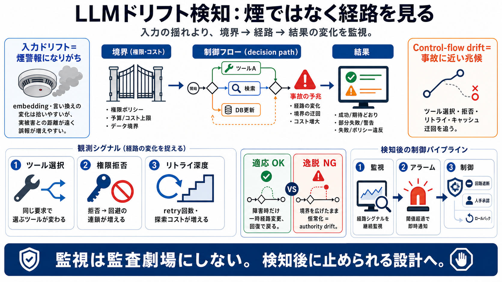

Learntalk | Talking About Time: Ago, Back, Before, and Earlier
You use ago to refer to a past time from the present time. For example, if an action happened "three days ago," three da…

You use ago to refer to a past time from the present time. For example, if an action happened "three days ago," three da…
adverb You use ago when you are referring to past time. For example, if something happened one year ago, it is one year…
An English teacher explains how the word "ago" is used when talking about things that happened in the past.
I had finished the task an hour ___ . 1) ago 2) before Ans : 2 (before) 1) “ago” means a time point in the past. It …
It's an adverb (or an adjective) functioning as part of a time adverbial, and meaning the same as the phrase "in the pas…